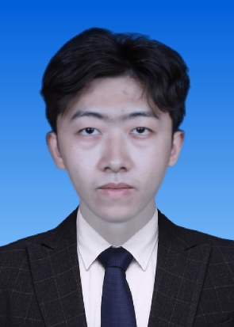

Yongyuan Chen （陈永园）
Ph.D. Student
College of Computer Science and Technology
Zhejiang University
Hi! I am a Ph.D. student at Zhejiang University, advised by Dr. Boxi Wu.
My recent work includes editable diagram generation with vision large language models and image editing with flow-based generative models.

Publications
DiagramGPT-Llama3: Enabling Editable, High-Fidelity Diagram Generation with Vision Large Language Models
SNR-Edit: Structure-Aware Noise Rectification for Inversion-Free Flow-Based Editing
* Corresponding author.